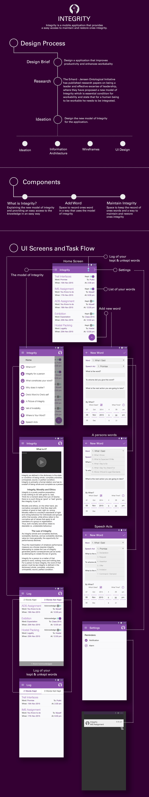

The Integrity app is grounded in The Erhard - Jensen Ontological/Phenomenological Initiative's new model of integrity, as outlined in this paper. This model posits that integrity is a fundamental condition for workability, emphasizing the importance of personal integration for individuals to function effectively. As my inaugural project as a UX designer, I created an application that streamlines the process of maintaining and restoring one's integrity, in alignment with these principles.
